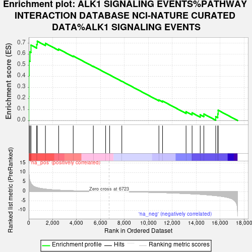
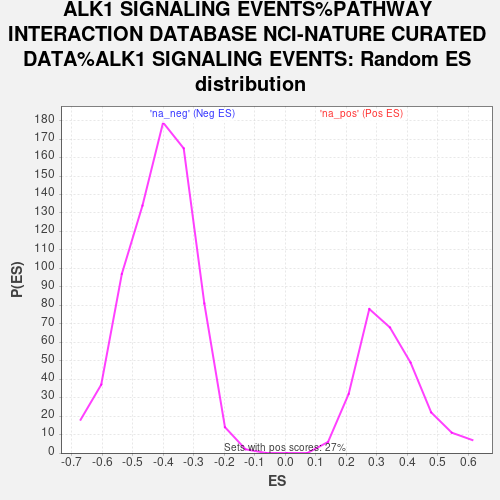

| Dataset | gene_ranks |
| Phenotype | NoPhenotypeAvailable |
| Upregulated in class | na_pos |
| GeneSet | ALK1 SIGNALING EVENTS%PATHWAY INTERACTION DATABASE NCI-NATURE CURATED DATA%ALK1 SIGNALING EVENTS |
| Enrichment Score (ES) | 0.71763873 |
| Normalized Enrichment Score (NES) | 2.0915449 |
| Nominal p-value | 0.0 |
| FDR q-value | 0.0039641396 |
| FWER p-Value | 0.088 |

| SYMBOL | RANK IN GENE LIST | RANK METRIC SCORE | RUNNING ES | CORE ENRICHMENT | |
|---|---|---|---|---|---|
| 1 | ID1 | 4 | 14.135 | 0.2148 | Yes |
| 2 | SMAD9 | 8 | 12.791 | 0.4091 | Yes |
| 3 | SMAD7 | 34 | 8.656 | 0.5394 | Yes |
| 4 | ENG | 107 | 5.632 | 0.6209 | Yes |
| 5 | TLX2 | 190 | 4.379 | 0.6828 | Yes |
| 6 | BMPR2 | 663 | 2.168 | 0.6887 | Yes |
| 7 | TGFBR1 | 715 | 2.095 | 0.7176 | Yes |
| 8 | SMAD1 | 1397 | 1.331 | 0.6988 | No |
| 9 | TGFB3 | 2501 | 0.772 | 0.6473 | No |
| 10 | ACVR2A | 3720 | 0.457 | 0.5844 | No |
| 11 | ACVR1 | 5402 | 0.161 | 0.4905 | No |
| 12 | SMAD4 | 6431 | 0.030 | 0.4320 | No |
| 13 | CAV1 | 6768 | 0.000 | 0.4127 | No |
| 14 | MAPK1 | 7785 | -0.065 | 0.3555 | No |
| 15 | ACVR2B | 10885 | -0.506 | 0.1855 | No |
| 16 | SMAD5 | 11192 | -0.566 | 0.1765 | No |
| 17 | FKBP1A | 13157 | -1.050 | 0.0799 | No |
| 18 | CSNK2B | 13661 | -1.200 | 0.0693 | No |
| 19 | TGFB1 | 14341 | -1.437 | 0.0522 | No |
| 20 | MAPK3 | 14645 | -1.585 | 0.0589 | No |
| 21 | ACVRL1 | 15637 | -2.159 | 0.0349 | No |
| 22 | ARRB2 | 15810 | -2.275 | 0.0597 | No |
| 23 | PPP1CA | 15841 | -2.297 | 0.0929 | No |
